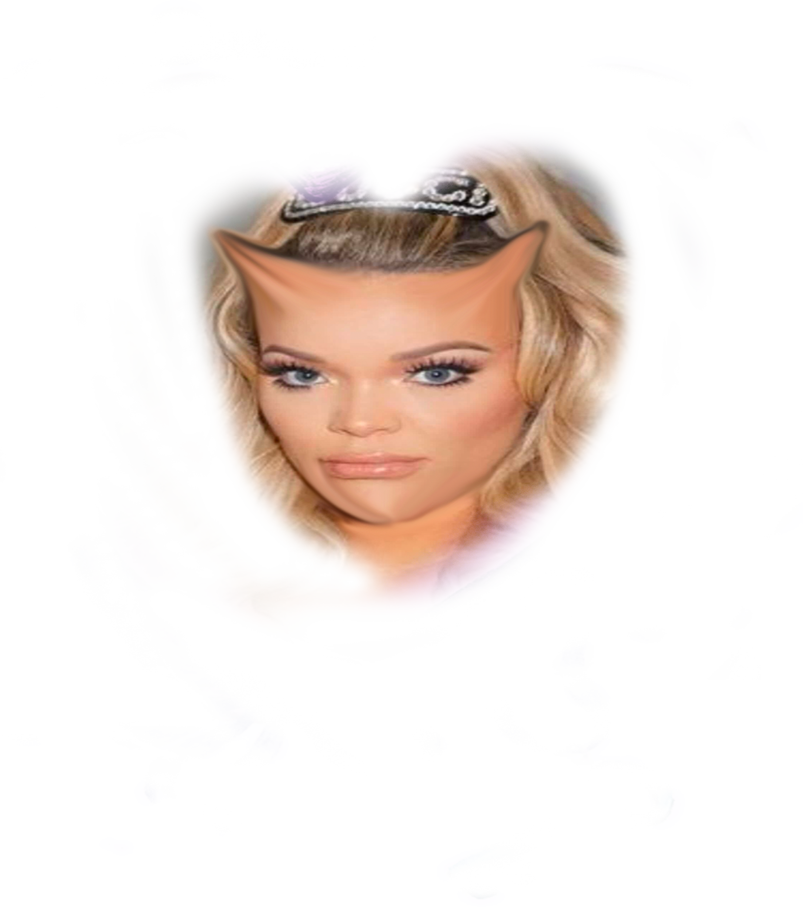
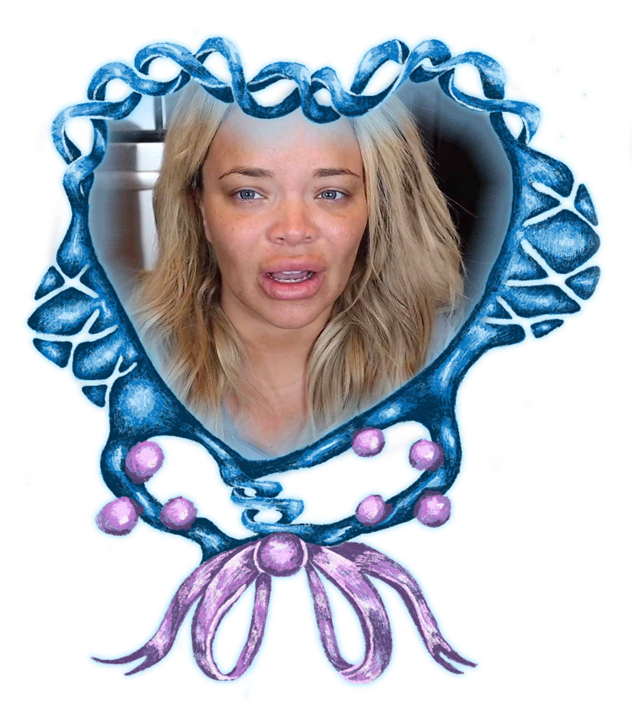
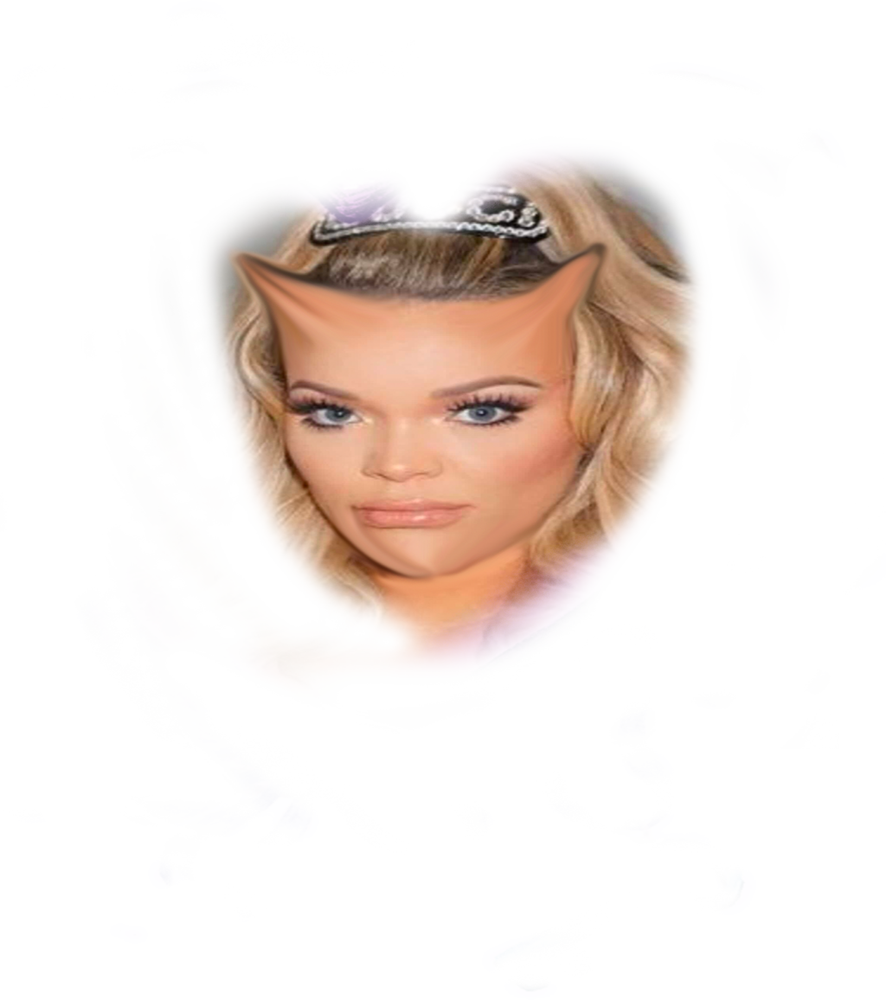
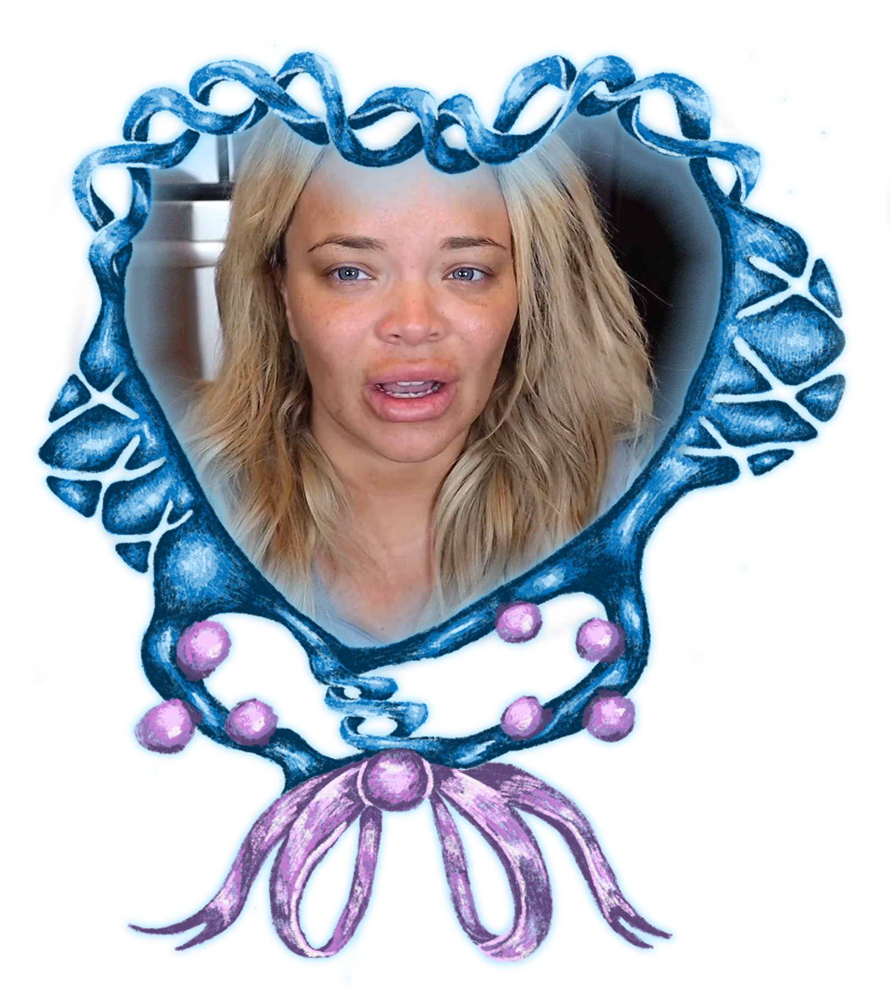

Wealthy white women frequently depict themselves as self-made success stories regardless of the way they got there.
Trisha Paytas hase simultaneously painted herself as a victim and a self-made success storie, when in reality she has attained their capitalistic success through exploitation and bigotry, by 'punching down' on marginalized peoples solely for exposure. With the rhetoric and repertoire of white liberal feminism being the most commonly seen in mainstream media and society, which emphasizes capitalistic success and simply having the ability to mirror the actions of men, while not accounting for the duplicities of gender, class, and race, and liberation from capitalist systems of exploitation, Paytas's harmful actions are frequently overlooked or left unquestioned due to her capitalistic success. Paytas has not expressed any guilt for her financial successes that have been built off 'punching down', or her story of what she claims to be hard, honest work, or her role in enforcing strict binary gender structures. The true story, and the people who suffered for her success, contrasts greatly to the one she portrays.
This project has been constructed on three main concepts:
Click the buttons to learn more.
Paytas has in some way, shape, or form profitted off of the queer community by purposefully or accidentally aligning herself directly against or 'for' the community. Trisha Paytas being an accidental queer icon out of irony, while simultaneously mocking and belitting the queer community, has brought her financial gain.
By painting herself as a victim, Paytas has attempted to avoid accountability for her actions that have harmed others. The status of victimhood is also typically reserved for white women, and she has sought to take advantage of that and absolve herself of responsibility.
The most important connecting thread at play is the fact that Paytas has profited off harming marginalized communities, and then turned around paint herself as a 'girlboss,' revealing the conflicting goals of feminism and capitalism.